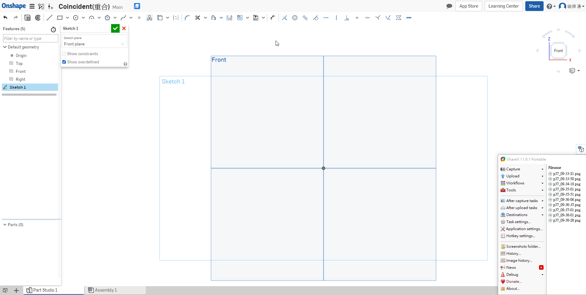
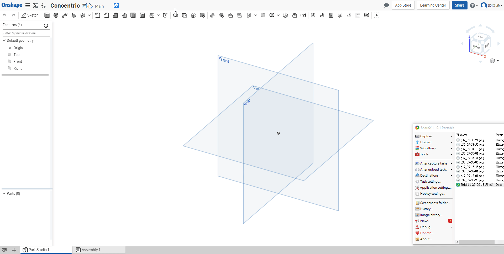
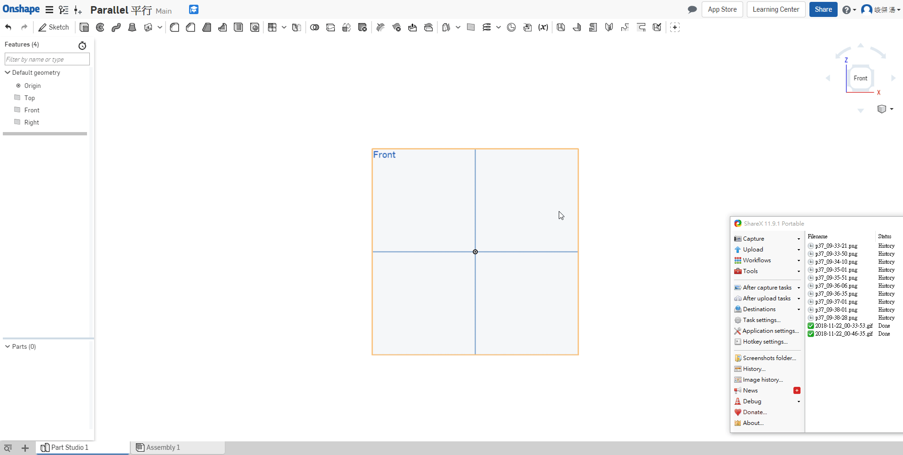

幾何 << Previous Next >> 圖面
約束
Coincident ( i ) 重合共點

Concentric 同心

Parallel ( b ) 平行

Tangent ( t ) 相切
Horizontal ( h ) 水平
Vertical ( v ) 立式垂直
Perpendicular 交叉垂直
Equal ( e ) 等長
Midpoint 中點
Normal 垂直
Pierce 貫穿
Symmetric 對稱
Fix 固定
幾何 << Previous Next >> 圖面